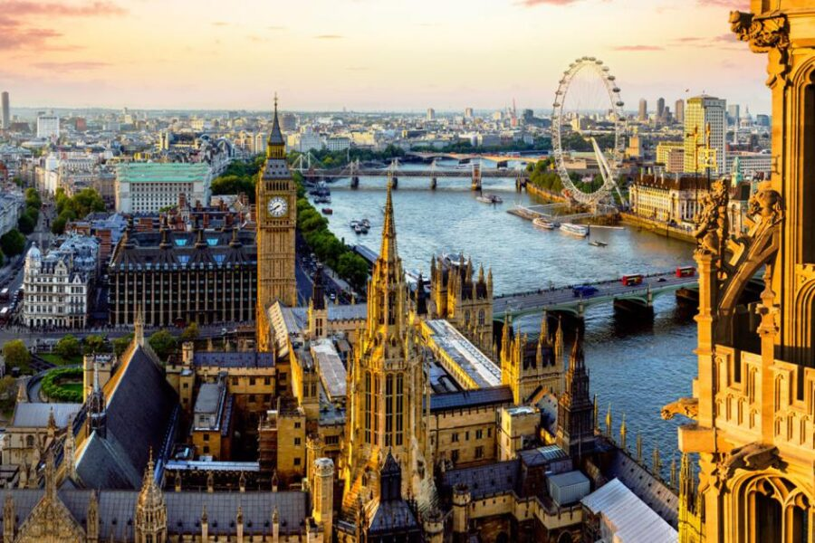
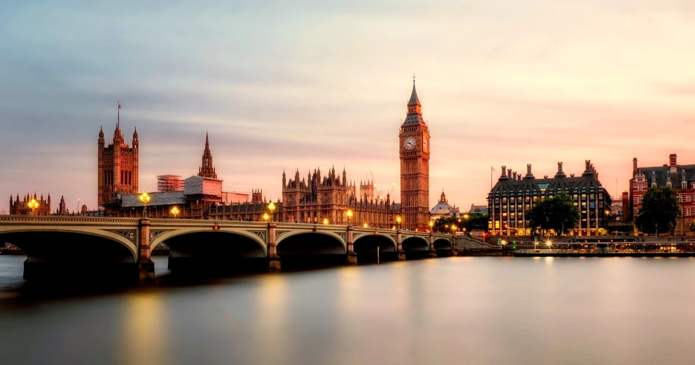

Pontos turisticos na Europa


A Europa abriga alguns dos pontos turísticos mais icônicos e visitados do mundo, destacando-se a Torre Eiffel (França), o Coliseu (Itália), a Sagrada Família (Espanha), o Big Ben (Reino Unido) e a Acrópole (Grécia). O continente oferece uma mistura rica de locais históricos, museus de arte, paisagens naturais e arquitetura única.
Conferir Pontos Turisticos